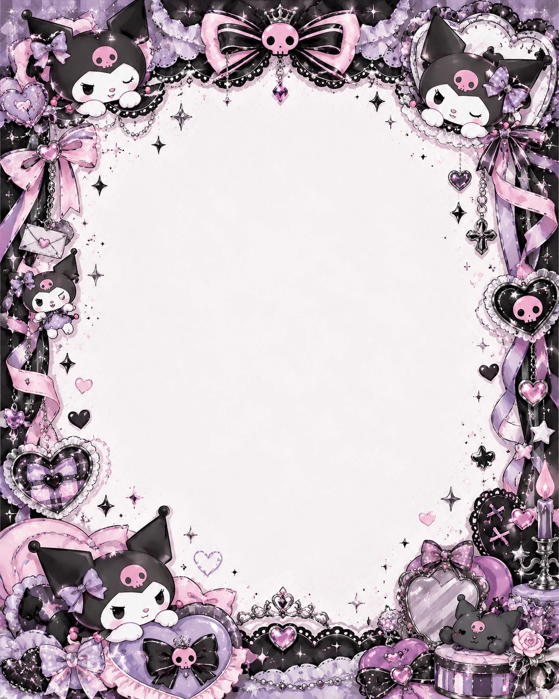

✦ un pedacito de canción ✦
"Y es verdad Destrozas gramo a gramo el dolor Silencias a ese mal narrador Me ilumino, aunque solo un momento.."
♡ ✦ ☾ ✦ ♡
♡ Toca a Kuromi para recibir un guiño ♡
🖤 KUROMI • dulce, rebelde y kawaii 💜✦ Una sorpresa muy especial ✦
Una cartita para ti ♡
Entre moños, calaveritas rosas, corazones y estrellas, hay algo especial para ti. Más Kuromis, más detalles lindos y una carta hecha con muchísimo amor.
♡ Toca el sobre para abrir ♡Edición Kuromi • ternura + travesura + corazones
☾ KUROMI VIBES ✦

♡ Hecho con cariño ♡